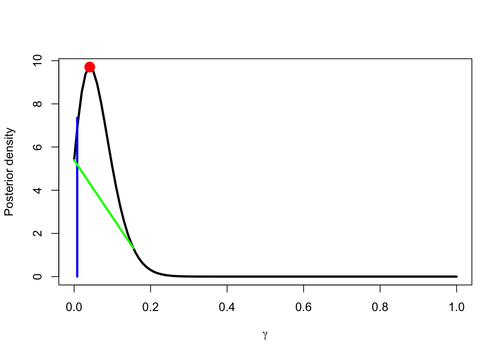

Group-level analyses like t-tests, ANOVAs, regressions and mixed effects models performed on condition means may provide the happy researcher with statistically significant effects, representing some significant mean difference between experimental conditions in the population. Psychologists and other researchers often then infer support for their psychological theories or models on the basis of this significant group-level effect. All sounds perfectly ok, right? No, it’s not! As we pointed out recently, this is problematic because means are not always representative of their constituents and psychology is something that happens in individual mind/brains McManus, Young & Sweetman. Even if we find a significant effect at the group level between conditions this doesn’t mean that most (or even any in some cases!) of the individuals in the sample/population show the effect. We cannot generalize from the group/condition mean to person level as it commonly done by experimental psychologists. In our paper we show a quick survey of this problem in the field and offer some within-person analytic approaches to address it. Below I will walk you through two of these approaches: Frequentist and Bayesian prevalence testing. These approaches allow you to test whether individuals show a particular effect of interest at the within-person level and then allow you to make inferences about the prevalence of the within-person effect in the population. If you want to make an inference to support a psychological model or theory you really need to have some idea about whether the effect is present at the individual/within-person level, since, well, psychology is a property of individual people or at least their minds/brains!
First, we will perform a frequentist (i.e., classic stats) prevalence test. We will need to create some custom functions to compute the prevalence test.
# CREATE NECESSARY FREQUENTIST FUNCTION (code we adapted from Donhauser et al.'s (2018) MATLAB code)
prevalence_test <- function(observed, alpha_ind=0.05, beta_ind=1, alpha_group=0.05, gamma_0=0.5) {
# Inputs:
# observed = vector of p-values OR vector with two values, e.g., 'c(positive cases, total cases)'
# alpha_ind = alpha threshold for person-level tests, if 'observed' = vector of p-values (typically set to .05)
# beta_ind = sensitivity of person-level tests (probably set to 1.00)
# alpha_group = see "outputs"
# gamma_0 = null gamma value for empirical prevalence to be tested against (defaults to majority null)
# Outputs:
# p_null = p-value for majority null or whatever null you specify in the gamma_0 argument (e.g., to specify a global null set "gamma_0 = 0")
# gamma_0 = highest gamma_0 value that can be rejected at threshold of 'alpha_group' given positive cases. Note this output is not the same as the input argument
if(sum(observed > 1) == 0) {
pvals <- observed
} else {
pvals <- c(rep(0, observed[1]), rep(1, observed[2]-observed[1]))
}
n <- length(pvals)
k_obs <- sum(pvals < alpha_ind)
kvals <- 0:n
dgamma <- 0.001
gammavals <- seq(0, 1, dgamma)
p_k_gamma <- matrix(0, nrow=length(gammavals), ncol=length(kvals))
p_kk_gamma <- matrix(0, nrow=length(gammavals), ncol=length(kvals))
for(iGam in 1:length(gammavals)) {
p_pos <- gammavals[iGam] * beta_ind + (1 - gammavals[iGam]) * alpha_ind
p_neg <- gammavals[iGam] * (1 - beta_ind) + (1 - gammavals[iGam]) * (1 - alpha_ind)
for(iK in 1:length(kvals)) {
k <- kvals[iK]
tmp <- choose(n, k) * p_pos^k * p_neg^(n - k)
p_k_gamma[iGam, iK] <- tmp
p_kk_gamma[iGam, iK] <- 1 - sum(p_k_gamma[iGam, 1:iK]) + tmp
}
}
iK <- which(kvals == k_obs)
p_null <- p_kk_gamma[which(gammavals == gamma_0), iK]
index <- sum(p_kk_gamma[, iK] < alpha_group)
if(index != 0) {
gamma_0 <- gammavals[index]
} else {
gamma_0 <- 0
}
return(list(p_null=p_null, gamma_0=gamma_0, p_kk_gamma=p_kk_gamma, gammavals=gammavals, p_k_gamma=p_k_gamma))
}Next, we will import the packages we need and the data from our in-class experiment. For ease of interpretation, we set deviation coding for the factors.
# import packages, data and set coding
library(lme4) # linear mixed effects models
library(lmerTest) # p-values for lmers
library(ggplot2)
library(tidyverse)
library(sjPlot)
library(performance)
#Read in the data and rename
df <- read.csv("~/Library/CloudStorage/Dropbox/Documents/My data/Moral sense task/practical/data example.csv")
# make sure everything is factor
df$Task.Name <- as.factor(df$Task.Name)
df$Personal <- as.factor(df$Personal)
df$DPv1.0.Permissible <- as.factor(df$DPv1.0.Permissible)
df$Personal.force <- as.factor(df$Personal.force)
df$Intention <- as.factor(df$Intention)
df$DPv2.0.Permissible <- as.factor(df$DPv2.0.Permissible)
#set deviation contrasts for ease of interpretation -.5 vs .5
c<-contr.treatment(2)
my.coding<-matrix(rep(1/2, 2), ncol=1)
my.simple<-c-my.coding
my.simple
#keys .5 Q-Yes, -.5 P-Yes
contrasts(df$Task.Name)<-my.simple
contrasts(df$Task.Name)
#personal .5 Yes, -.5 No
contrasts(df$Personal)<-my.simple
contrasts(df$Personal)
#prediction DPv1.0 act no intended .5 Yes, -.5 No
contrasts(df$DPv1.0.Permissible)<-my.simple
contrasts(df$DPv1.0.Permissible)
#personal force .5 Yes, -.5 No
contrasts(df$Personal.force)<-my.simple
contrasts(df$Personal.force)
#intention .5 Yes, -.5 No
contrasts(df$Intention)<-my.simple
contrasts(df$Intention)
#prediction DPv2.0 .5 Yes, -.5 No
contrasts(df$DPv2.0.Permissible)<-my.simple
contrasts(df$DPv2.0.Permissible)Let’s create another custom function for our within-person level analysis. Basically, we will collect the output of a logistic regression model for a single individual’s data to see if the effects in our model are found at the individual level. For this to be possible we need many trials. You can think about the trials a bit like you’d think of participants if we were doing a standard group-level analysis. With the within-person analysis we are seeing if there is an effect of some IV on responses across an individual’s trials. Here we see whether each individuals showed an effect of personal (vs. impersonal) on their moral judgments in the moral sense task.
# Create within-person level analysis functions
### Making analysis / output-storing function (for designs where item/vignette is of one condition)
get_person_effx_mixed <- function(df) {
# argument is dat = data_of_interest
id <- unique(as.character(df$ID)) # subject_id var
dp1_eff <- summary(glm(Permissible ~ Personal, # dv ~ predictor_factor
data = df, family = binomial(link = "logit")))
dp1_coeff <- round(as.numeric(dp1_eff$coefficients[2,1]),5) # estimate (row, column) - change rounding to be higher if your estimates are universally smaller
# note that the coefficient rounding was implemented so exact zero effects wouldn't be estimated as approximately zero
# see https://stackoverflow.com/questions/73886492/statistically-identical-lm-and-t-test-yield-marginally-different-effect-size for rounding justification
dp1_pval <- as.numeric(dp1_eff$coefficients[2,4]) # p-value (row, column)
return(data.frame(id, dp1_coeff, dp1_pval))
}Let’s perform the within-person tests.
## Create and run loop to conduct typical group-level tests within each person using the above functions
### Study 1
list_ID_s2 <- unique(as.character(df$ID)) # pull person-IDs from dataset of interest
dat_save_s2 <- data.frame(matrix(ncol = 7, nrow = 0)) # create empty dataset to store values
for (single_ID in list_ID_s2) {
single_dataset <- df %>% filter(ID == single_ID) # create single person dataset from dataset of interest
single_result_df <- get_person_effx_mixed(df = single_dataset) # create single person analysis output
dat_save_s2 <- rbind(dat_save_s2, single_result_df) # add single person analysis script output to empty dataset
} # repeat for each person in dataset
### Check that looped function worked
View(dat_save_s2) # nrow should equal number of participantsWe can now create a dataframe that indicates each individual’s effect, and whether it is in the predicted direction and whether it is significant, given a particular alpha level (here .05). We can then get the total number of participants who show an significant within-person effect in the predicted direction.
## Create dataset that indicates, for each person, whether their tests pass alpha threshold
### Study 1
dat_save_s2 <- dat_save_s2 %>%
mutate(dp1_Diff = case_when(
dp1_coeff > 0 ~ "Claimed Direction",
dp1_coeff == 0 ~ "No Difference",
dp1_coeff < 0 ~ "Opposite Direction")) %>%
mutate(Alpha_Threshold = case_when(
dp1_pval < .05 ~ "Passed", # controls false pos rate at person-level for three tests
TRUE ~ "Failed")) %>%
mutate(Prevalence_Inclusion = case_when(
(dp1_Diff == "Claimed Direction" & Alpha_Threshold == "Passed") ~ "Yes",
TRUE ~ "No"))
## Get number of Ps whose pattern is correct with all statistical tests having p-vals under .05
table(dat_save_s2$Prevalence_Inclusion) # 'yes' means all statistical tests passed alpha threshold##
## No Yes
## 41 4We can see that out of our 45 participants only 4 of them showed the predicted significant effect of personal (vs. impersonal). We can perform a test of whether the prevalence of the effect is greater than 50%. That is, we can test against a “majority null.” We argue in the paper and social psychologists seemed to agree when we asked them that if we want to infer support for a general psychological model or theory the effects it predicts should be shown by the majority of individuals in the population.
# CONDUCT FREQUENTIST PREVALENCE
## Study 1 (using numbers from 'table' functions' output above)
n <- 45 # total N
k <- 4 # number of persons matching hypothesized / group-level pattern (i.e., those marked 'yes' in 'prevalence_inclusion var)
s2_freqprev <- prevalence_test(c(k, n)) # specify positive cases out of total cases for prev test function
s2_freqprev$p_null # print p-value testing against majority null (> 50% where the 'prevalence_test' function and specify 'gamma_0' = 0.5)## [1] 1## if you want to get a p-value for the global null, use the 'prevalence_test' function and specify 'gamma_0' = 0
## if you want to get a p-value for a different null value, use the 'prevalence_test' function and specify 'gamma_0' = [enter different null value]Here we can see that we, as you might guess, fail to reject the majority null, p = 1. That is, we do not find that the prevalence of the individual-level effect is greater than 50% in the population. We can also test against a global null by changing ‘gamma_0’ to = 0 in the prevalence function. That is, is the prevalence of the individual-level effect greater than 0% in the population - i.e., does it exist in anyone in the population!
# Change gamma to 0 in the NECESSARY FREQUENTIST FUNCTION (code we adapted from Donhauser et al.'s (2018) MATLAB code)
prevalence_test <- function(observed, alpha_ind=0.05, beta_ind=1, alpha_group=0.05, gamma_0=0.0) {
# Inputs:
# observed = vector of p-values OR vector with two values, e.g., 'c(positive cases, total cases)'
# alpha_ind = alpha threshold for person-level tests, if 'observed' = vector of p-values (typically set to .05)
# beta_ind = sensitivity of person-level tests (probably set to 1.00)
# alpha_group = see "outputs"
# gamma_0 = null gamma value for empirical prevalence to be tested against (defaults to majority null)
# Outputs:
# p_null = p-value for majority null or whatever null you specify in the gamma_0 argument (e.g., to specify a global null set "gamma_0 = 0")
# gamma_0 = highest gamma_0 value that can be rejected at threshold of 'alpha_group' given positive cases. Note this output is not the same as the input argument
if(sum(observed > 1) == 0) {
pvals <- observed
} else {
pvals <- c(rep(0, observed[1]), rep(1, observed[2]-observed[1]))
}
n <- length(pvals)
k_obs <- sum(pvals < alpha_ind)
kvals <- 0:n
dgamma <- 0.001
gammavals <- seq(0, 1, dgamma)
p_k_gamma <- matrix(0, nrow=length(gammavals), ncol=length(kvals))
p_kk_gamma <- matrix(0, nrow=length(gammavals), ncol=length(kvals))
for(iGam in 1:length(gammavals)) {
p_pos <- gammavals[iGam] * beta_ind + (1 - gammavals[iGam]) * alpha_ind
p_neg <- gammavals[iGam] * (1 - beta_ind) + (1 - gammavals[iGam]) * (1 - alpha_ind)
for(iK in 1:length(kvals)) {
k <- kvals[iK]
tmp <- choose(n, k) * p_pos^k * p_neg^(n - k)
p_k_gamma[iGam, iK] <- tmp
p_kk_gamma[iGam, iK] <- 1 - sum(p_k_gamma[iGam, 1:iK]) + tmp
}
}
iK <- which(kvals == k_obs)
p_null <- p_kk_gamma[which(gammavals == gamma_0), iK]
index <- sum(p_kk_gamma[, iK] < alpha_group)
if(index != 0) {
gamma_0 <- gammavals[index]
} else {
gamma_0 <- 0
}
return(list(p_null=p_null, gamma_0=gamma_0, p_kk_gamma=p_kk_gamma, gammavals=gammavals, p_k_gamma=p_k_gamma))
}
# CONDUCT FREQUENTIST PREVALENCE
## Study 1 (using numbers from 'table' functions' output above)
n <- 45 # total N
k <- 2 # number of persons matching hypothesized / group-level pattern (i.e., those marked 'yes' in 'prevalence_inclusion var)
s2_freqprev <- prevalence_test(c(k, n)) # specify positive cases out of total cases for prev test function
s2_freqprev$p_null # print p-value testing against majority null (> 50% where the 'prevalence_test' function and specify 'gamma_0' = 0.5)## [1] 0.6650433## if you want to get a p-value for the global null, use the 'prevalence_test' function and specify 'gamma_0' = 0
## if you want to get a p-value for a different null value, use the 'prevalence_test' function and specify 'gamma_0' = [enter different null value]Here we fail to reject the global null, p = 0.67. That is, the prevalence of the individual-level effect is not significantly greater than 0% in the population. It seems the individual-level effect doesn’t exist in anyone in the population!
We can also test prevalence in the Bayesian framework, you will have needed to have run the code above to get the results of the within-person analysis first. We need to create some more custom functions for this. You may need to install the nleqslv package if you don’t have it.
# CREATE NECESSARY BAYES FUNCTIONS (code from Ince et al., 2021)
library(nleqslv)
bayesprev_map <- function(k, n, a=0.05, b=1) {
# Bayesian maximum a posteriori estimate of population prevalence gamma
# under a uniform prior
#
# Args:
# k: number of participants/tests significant out of
# n: total number of participants/tests
# a: alpha value of within-participant test (default=0.05)
# b: sensitivity/beta of within-participant test (default=1)
gm <- (k/n -a)/(b-a)
if(gm <0) gm <- 0
if(gm>1) gm <- 1
return(gm)
}
bayesprev_posterior <- function(x, k, n, a=0.05, b=1) {
# Bayesian posterior of population prevalence gamma under a uniform prior
#
# Args:
# x : values of gamma at which to evaluate the posterior density
# k : number of participants significant out of
# n : total number of participants
# a : alpha value of within-participant test (default=0.05)
# b : sensitivity/beta of within-participant test (default=1)
m1 <- k + 1
m2 <- n - k + 1
theta <- a + (b-a)*x
post <- (b -a)*dbeta(theta,m1, m2)
post <- post/(pbeta(b, m1, m2) - pbeta(a, m1, m2))
return(post)
}
bayesprev_bound <- function(p, k, n, a=0.05, b=1) {
# Bayesian lower bound of population prevalence gamma under a uniform prior
#
# Args:
# p : density the lower bound should bound (e.g. 0.95)
# k : number of participants significant out of
# n : total number of participants
# a : alpha value of within-participant test (default=0.05)
# b : sensitivity/beta of within-participant test (default=1)
m1 <- k + 1
m2 <- n - k + 1
th_c <- qbeta( p*pbeta(a, m1, m2) + (1-p)*pbeta(b, m1, m2), m1, m2 )
g_c <- (th_c -a)/(b-a)
return(g_c)
}
bayesprev_hpdi <- function(p, k, n, a=0.05, b=1) {
# Bayesian highest posterior density interval of population prevalence gamma
# under a uniform prior
#
# Args:
# p : HPDI to return (e.g. 0.95 for 95%)
# k : number of participants significant out of
# n : total number of participants
# a : alpha value of within-participant test (default=0.05)
# b : sensitivity/beta of within-participant test (default=1)
m1 <- k+1
m2 <- n-k+1
if(m1 ==1) {
endpts <- c(a, qbeta( (1 -p)*pbeta(a, m1, m2) + p*pbeta(b, m1, m2), m1, m2 ) )
return((endpts -a)/(b-a))
}
if(m2 ==1) {
endpts <- c( qbeta( p*pbeta(a, m1, m2) + (1- p)* pbeta(b, m1, m2), m1, m2 ) , b)
return( (endpts-a)/(b-a))
}
if(k<= n*a) {
endpts <- c(a, qbeta( (1 -p)*pbeta(a, m1, m2) + p*pbeta(b, m1, m2), m1, m2 ) )
return((endpts -a)/(b-a))
}
if(k>= n*b) {
endpts <- c( qbeta( p*pbeta(a, m1, m2) + (1- p)* pbeta(b, m1, m2), m1, m2 ) , b)
return( (endpts-a)/(b-a))
}
g <- function(x, m1, m2, a, b, p ) {
y <- numeric(2)
y[1] <- pbeta(x[2], m1, m2) - pbeta(x[1], m1, m2) - p*(pbeta(b, m1, m2) - pbeta(a, m1, m2))
y[2] <- log(dbeta(x[2], m1, m2)) - log(dbeta(x[1], m1, m2))
return(y)
}
x_init <- numeric(2)
p1 <- (1-p)/2
p2 <- (1 +p)/2
x_init[1] <- qbeta( (1 -p1)*pbeta(a, m1, m2) + p1* pbeta(b, m1, m2), m1, m2 )
x_init[2] <- qbeta( (1 -p2)*pbeta(a, m1, m2) + p2* pbeta(b, m1, m2), m1, m2 )
opt <- nleqslv(x_init, g, method ="Newton", control=list(maxit=1000), m1=m1, m2=m2, a=a, b=b, p=p)
if (opt$termcd ==1) print("convergence achieved")
if (opt$termcd != 1) print("failed to converge")
temp <- opt$x
if (temp[1] <a) {
temp[1] <- a
temp[2] <- qbeta( (1 -p)*pbeta(a, m1, m2) + p* pbeta(b, m1, m2), m1, m2 )
}
if (temp[2] > b) {
temp[1] <- qbeta( p*pbeta(a, m1, m2) + (1-p)* pbeta(b, m1, m2), m1, m2 )
temp[2] <- b
}
endpts <- (temp -a)/(b-a)
return(endpts)
}
bayesprev_posteriorprob <- function(x, k, n, a=0.05, b=1) {
# Bayesian posterior probability in favour of the population prevalence gamma being greater than x
#
# Args:
# x : values of gamma at which to evaluate the posterior probability
# k : number of participants significant out of
# n : total number of participants
# a : alpha value of within-participant test (default=0.05)
# b : sensitivity/beta of within-participant test (default=1)
theta <- a + (b-a)*x
m1 <- k + 1
m2 <- n - k + 1
p <- (pbeta(b,m1,m2)-pbeta(theta,m1,m2)) / (pbeta(b,m1,m2)-pbeta(a,m1,m2))
return(p)
}
bayesprev_posteriorlogodds <- function(x, k, n, a=0.05, b=1) {
# Bayesian posterior log-odds in favour of the population prevalence gamma being greater than x
#
# Args:
# x : log-odds threshold
# k : number of participants significant out of
# n : total number of participants
# a : alpha value of within-participant test (default=0.05)
# b : sensitivity/beta of within-participant test (default=1)
theta <- a + (b-a)*x
m1 <- k + 1
m2 <- n - k + 1
p <- (pbeta(b,m1,m2)-pbeta(theta,m1,m2)) / (pbeta(b,m1,m2)-pbeta(a,m1,m2))
lo<- log(p / (1 - p))
return(lo)
}So we plug in the results of our within-person tests (4 out of 45 participants showed the predicted significant effect).
# CONDUCT BAYESIAN PREVALENCE
## Study 1 (using numbers from 'table' functions' output above)
n <- 45 # total N
k <- 4 # number of persons matching hypothesized / group-level pattern (i.e., those marked 'yes' in 'prevalence_inclusion var)
x <- 0.50 # minority cut-off of population prevalence gamma for Bayesian posterior probability
x_0 <- 0.00 # global null of population prevalence gamma for Bayesian posterior probability
map = bayesprev_map(k, n) # get maximum a posteriori (MAP) estimate (i.e., the likeliest person-level prevalence population value)
int = bayesprev_hpdi(0.96, k, n) # get 96% HPDIs## [1] "convergence achieved"i1 = int[1] # get lower 96% HPDI
i2 = int[2] # get upper 96% HPDI
print(c(i1, map ,i2)) # print lower 96 HPDI, map estimate, and upper 96 HPDI## [1] 0.00000000 0.04093567 0.15471798bayesprev_posteriorprob(x, k, n) # Bayesian posterior probability in favor of population prevalence being greater than x## [1] 3.865992e-10bayesprev_posteriorlogodds(x, k, n) # Bayesian posterior log-odds in favor of the population prevalence being greater than x## [1] -21.67363bayesprev_posteriorprob(x_0, k, n) # Bayesian posterior probability in favor of population prevalence being greater than x_0## [1] 1bayesprev_posteriorlogodds(x_0, k, n) # Bayesian posterior log-odds in favor of the population prevalence being greater than x_0## [1] InfWe can see that Bayesian estimation suggests that the population prevalence of the effect is .04, 96% HPDI [0.00, 0.15] (think of these as Bayesian CIs). The probability of the prevalence being greater than .50 is pretty much 0 (3.865992e-10). But it seems the probability and log-odds that it’s greater than 0 is high.
We can plot our Bayesian prevalence results.
### plot posterior distribution of population prevalence
xvals <- seq(0, 1, .01)
pdf <- bayesprev_posterior(xvals, k, n)
plot(xvals, pdf, type ="l", xlab = expression(gamma), ylab ="Posterior density", lwd=3) # create plot base
### add the MAP estimate as a point
xmap = bayesprev_map(k, n)
pmap = bayesprev_posterior(xmap, k, n)
points(xmap, pmap, cex =2, col= "red", pch=16)
### add the .95 lower bound as a vertical line
xbound = bayesprev_bound(0.95, k, n)
pbound = bayesprev_posterior(xbound, k, n)
lines(c(xbound, xbound), c(0, pbound+0.5), col="blue", lwd=3)
### add the 0.96 HPDI as a horizontal line
int = bayesprev_hpdi(0.96, k, n) ## [1] "convergence achieved"h1 = bayesprev_posterior(i1, k, n)
h2 = bayesprev_posterior(i2, k, n)
lines(c(i1, i2), c(h1, h2), col ="green", lwd=3) # see https://easystats.github.io/bayestestR/articles/credible_interval.html#different-types-of-cis
To examine whether the effect of the personal parameter of the dual process model v1.0 was shown at the individual (within-person) level. We conducted both frequentist and Bayesian prevalence testing. This involved testing the effect for each individual to see if it was in the correct direction and significant. Then we computed the prevalence of predicted significant effects in the population. Frequentist prevalence revealed that the prevalence of significant within-person effects was not significantly greater than 0%, p = .67. Bayesian estimation revealed a population prevalence of .04, 96% HPDI [0.00, 0.15]. The probability of the prevalence being greater than .50 is was very small p < .001.